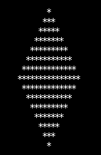
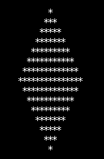

首页 > 编程笔记
C语言输出菱形（详解版）
菱形，就是如下所示的图形，总行数与总列数相等：

写一个程序，根据用户输入的总行数，打印出菱形。
这个题目主要是找出规律，考察读者的逻辑思维。
你可以从第一行开始，遍历所有的列，也可以从第一列开始，遍历所有的行。
下面的程序从第一行开始，遍历所有的列。
设菱形的总行数为line，总列数为column，当前行为i，当前列为j。上半部分与下半部分的规律不一样，应该分开讨论。
我们着眼于星号(*)，思考什么条件下输出星号，总结出如下的规律。
1) 对于上半部分(包括中间一行)，当前行与当前列满足如下关系输出星号：
2) 对于下半部分，当前行与当前列满足如下关系输出星号：
不满足上述条件，则输出空格。
于是写出如下的代码：

写一个程序，根据用户输入的总行数，打印出菱形。
这个题目主要是找出规律，考察读者的逻辑思维。
你可以从第一行开始，遍历所有的列，也可以从第一列开始，遍历所有的行。
下面的程序从第一行开始，遍历所有的列。
设菱形的总行数为line，总列数为column，当前行为i，当前列为j。上半部分与下半部分的规律不一样，应该分开讨论。
我们着眼于星号(*)，思考什么条件下输出星号，总结出如下的规律。
1) 对于上半部分(包括中间一行)，当前行与当前列满足如下关系输出星号：
- j>=(column+1)/2-(i-1) (column+1)/2-(i-1)为第i行最左边的星号
- j<=(column+1)/2+(i-1) (column+1)/2+(i-1)为第i行最右边的星号
2) 对于下半部分，当前行与当前列满足如下关系输出星号：
- j>=(column+1)/2-(line-i) (column+1)/2-(line-i)为第i行最左边的星号
- j<=(column+1)/2+(line-i) (column+1)/2+(line-i)为第i行最右边的星号
不满足上述条件，则输出空格。
于是写出如下的代码：
#include <stdio.h>
#include <stdlib.h>
int main(){
int line; // 菱形总行数
int column; // 菱形总列数
int i; // 当前行
int j; // 当前列
printf("请输入菱形的行数(奇数)：");
scanf("%d", &line);
if(line%2==0){ // 判断是否是奇数
printf("必须输入奇数！\n");
exit(1);
}
column = line; // 总行数和总列数相同
for(i=1; i<=line; i++){ // 遍历所有行
if(i<(line+1)/2+1){ // 上半部分（包括中间一行）
for(j=1; j<=column; j++){ // 遍历上半部分的所有列
if( (column+1)/2-(i-1)<=j && j<=(column+1)/2+(i-1) ){
printf("*");
}else{
printf(" ");
}
}
}else{ // 下半部分
for(j=1; j<=column; j++){ // 遍历下半部分的所有列
if( (column+1)/2-(line-i)<=j && j<=(column+1)/2+(line-i) ){
printf("*");
}else{
printf(" ");
}
}
}
printf("\n");
}
return 0;
}
运行结果：
请输入菱形的行数(奇数)：11
*
***
*****
*******
*********
***********
*********
*******
*****
***
*
关注公众号「站长严长生」，在手机上阅读所有教程，随时随地都能学习。内含一款搜索神器，免费下载全网书籍和视频。

微信扫码关注公众号